![[ANA JDG] Asterix and the Great Rescue - Megadrive](../vi/6oUXi0ckLmA/default.jpg)
![[ Présentation pour la chaîne Grenier des Joueurs ] JDG Prod](../art/SHAR.6419.583.2.jpg)


À l'aide de Web Archive et du site web "joueurdugrenier.fr" qui a disparu après la vidéo sur Mission Impossible, j'ai pût récupérer les 6 étapes de production d'un épisode de Joueur du Grenier comme écrit sur le site web.
Phase de test
On sort les consoles, les manettes, on s'énerve, on rigole, on pleure et on devient fou.
Phase d'écriture
On essaye difficilement de transformer les conneries, délires et autres crises de nerfs en un script à peu près potable.
Phase de tournage
On prend la caméra et on filme toutes les parties où on me voit apparaître en vrai ! Ainsi que les plans sur fond vert pour effets spéciaux.
Phase de montage
C'est le boulot de Fred ! Montage de la vidéo dans sa longueur, modification de la vidéo si nécessaire. Bref, je bosse sur ce que vous verrez !
Phase de Post-production
C'est le boulot de Seb ! Travail sur tous les effets spéciaux de la vidéo, tout ce qui a été tourné sur fond vert c'est pour sa pomme !
Phase d'assemblage
On compile les effets spéciaux de Seb avec le montage de Fred, on emboîte les deux pour faire la vidéo finale !
Bien sur, le crédit reviens à Joueur du Grenier :
La chaîne YouTube : https://www.youtube.com/@joueurdugrenier/videos
Le Twitter : https://twitter.com/Frederic_Molas
KidpaddleetcieGlin
Description :
Le Blog d'une personne aillant découvert internet en 2007 qui partage une partie de sa vie mais surtout ses réflexions, ses découvertes et ses cours!
Bon, je ne vous garantit pas que 100% du contenu est fiable mais aux moins je l'approuve! :)
N'oubliez pas de me retrouver sur les autres sites internet du réseaux KidpaddleetcieGlin retrouvable dans le premier article de chaque page. ^-^
Bon, je ne vous garantit pas que 100% du contenu est fiable mais aux moins je l'approuve! :)
N'oubliez pas de me retrouver sur les autres sites internet du réseaux KidpaddleetcieGlin retrouvable dans le premier article de chaque page. ^-^
Je bosse actuellement pour la chaîne Grenier des Joueurs
Son morceau préféré
Retour au blog de KidpaddleetcieGlin
Image provenant de https://agentmajeur.fr/mots-de-transition/
1. Faire des recherches sur le sujet de la présentation
Donc aller sur Bing, Yahoo, Ecosia , ect et dans des livres pour constituer un document avec le plus d'informations possibles.
2. Relever les mots-clés et les mots compliqués
Avec un surligneur, identifier ce qui est important.
3. Résumer ses recherches et structurer
Les infos récoltées peuvent être résumées pour dégager un texte beaucoup plus court allant à l'essentiel.
Pour la structure, il faut une logique d'analyse ( chronologique , du plus gros au plus petit , du constat général au constat précis, ... )
4. Créer un visuel avec les mots-clés et les définitions des mots compliqués
Pour la recherche de visuel ( images, vidéos , ... ), utilisez les mots-clés dans le moteur de recherche d'image est plus que recommandés.
ATTENTION : Il ne faut pas surcharger d'image , et encore moins de texte, un visuel
( une diapo' de PowerPoint )
5. Tester et évaluer le temps
Pour qu'une présentation soit efficace, il faut savoir cadencé sa diction, savoir mettre des formes autant dans sa voix que sa gestuelle pour savoir garder l'attention des visionneurs.
D'après https://www.topsante.com/tous-les-avis-d-expert/combien-de-temps-peut-on-rester-concentre-71755#:~:text=Notre%20capacit%C3%A9%20de%20concentration%20avoisinerait,au%20bout%20de%2075%20minutes. , les gens perdent au bout de 90 minutes ( le temps d'un film ) la concentration.
Si votre présentation est très longue, veillez à faire une entracte alors.
Si votre présentation est assez courte, veillez à miser sur l'interactif ( faire participer le public ). Il y a plusieurs méthodes combinables :
- Commencer la présentation avec une araignée des mots qu'évoquent le sujet de la présentation ( le public s'attendra à trouver des concordances dans votre présentation )
- Faire une blague ou une observation ( le public peut réagir à votre présentation en plein milieu, sachez rebondir pour ne pas commettre un rejet. )
- Terminer la présentation dans un "question-réponse" ( le public pose des questions donc n'hésiter pas à prendre vos recherches et résumé sur le coté )
KidpaddleectieGlin
Ce tutoriel a été créé en Juin 2018 donc nous ne sommes pas encore avec un tutoriel dans la veine des prochaines !
Vous apprenez donc ici à:
- Animer sur Photoshop
- Extraire une partie de l'image dans un nouveau calque
- Créer une animation en .gif
TUTORIELS ALTERNATIFS
Ce tutoriel date de l'époque où ma chaîne YouTube principale était "Kidpaddleetcie"
( en Novembre 2016 plus précisément ) donc on est encore loin de la qualité d'aujourd'hui !
Télécharger Audacity ici: https://www.audacityteam.org/download/
Dans ce tutoriel, vous apprenez donc à:
- Capturer un son sortant de vos haut-parleurs/casques/oreillettes
- Isoler un son sur Audacity
- Enregistrer un son sur Audacity
- Supporter mon mauvais accent allemand
TUTORIELS ALTERNATIFS
Pourquoi s'embêter à faire de l'animation image par image alors que vous pouvez juste utiliser des PNGs l'un sur l'autre et les animer avec des images-clés ? Laissez-moi vous montrer comment animer une bouche !
Sinon, vous avez toujours la capacité de le faire image par image...mais sur Flipnote Studio !

Sinon, vous avez toujours la capacité de le faire image par image...mais sur Flipnote Studio !
How to do lippsync ?! - Glin
Learn how to do Lippsync with this little tuto !
via : www.sudomemo.net
Tutoriels alternatifs
Il n'est pas facile de trouver un emploi avec notre société qui vieillit et se débarrasse des vieilles technologies qui requièrent des personnes peu qualifiées ! Je vous propose donc des moyens pour vous rapprochez le plus possible de l'emploi qui vous prendra !
Déjà, il faut trouver un emploi, voici une liste de site web:
- Indeed
- Emploitic
- Careerealism
- Job-Hunt
- Careercloud
- GM4JH
- Personalbrandingblog
- Jibberjobber
- Cvite
- Emploipartner
Si vous êtes français, l'inscription au Pôle Emploi,Monster,Keljob,Apec,Région job,Météo job,Cadre emploi et Welcome to the jungle devrait vous faciliter le boulot d'en trouver !
Chercher un emploi, c'est une chose mais si vous n'avez pas les qualifications nécessaires, il vous reste à faire des études, des formations,... vous pouvez apprendre gratuitement sur ces sites web:
- Coursera
- edX
- Khan Academy
- Udemy
- MIT OpenCourseWare
- Stanford Online
- Open Culture Online Courses
Maintenant, si vous avez besoin de faire un CV de manière rapide, vous pouvez utiliser le logiciel gratuit en ligne "Canva": https://www.canva.com/fr_fr/
N'oubliez pas de vous armez d'un logiciel de traitement de texte comme Word Online ou
LibreOffice Writer pour écrive vos lettres de motivation !
Tutoriel alternatif
La vidéo de "La Tempête de Salem 2.0"
Télécharger PaintDotNet: https://www.getpaint.net/download.html
Rechercher des plugins pour PaintDotNet: https://forums.getpaint.net/topic/15260-plugin-index/
Liste des plugins
- Temperature (fait partit d'un pack)
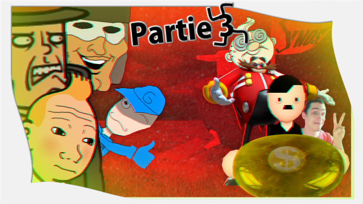Pendant 5 mois après "Professeur Layton combat le nazisme (partie 2)" ( lien ici: https://www.youtube.com/watch?v=S31PJyZf3mE ), je me suis lancé dans la partie 3 !
Ce fût long, difficile mais très instructif !
Je me permet donc de vous faire part des étapes de production !
Etape 0: Prise de conscience !
"Professeur Layton combat le nazisme (partie 2)" se terminait avec Layton,Luke,Tintin et Glin qui se remettait de la nouvelle comme quoi Princesse Luigi est nazi
(Oui, c'est du scénario de YouTube Poop) !
Mais la base du scénario tourne autour de Descole qui s'est caché dans la maison de Layton ( c'est la raison pour laquelle Layton a appelé Tintin et Princesse Luigi) ! La troisième partie devait donc permettre à Layton de retrouver Descole !
Malheureusement, si ce n'était que ça, la YTP ferait 2 minutes et ça aurait été décevant !
En plus, Descole n'est pas vraiment un personnage sur la thématique du nazisme ! Il nous faut mieux ! IL NOUS FAUT ENCORE PLUS DE PERSONNAGE ET UNE RÉELLE QUÊTE !
Etape 1: Storyboard !
J'ai utilisé le logiciel "Flipnote Studio" sur Nintendo DSi pour dessiner de manière un peu automatique (tout ce qui me passait par la tête) les différentes scènes de la YTP !
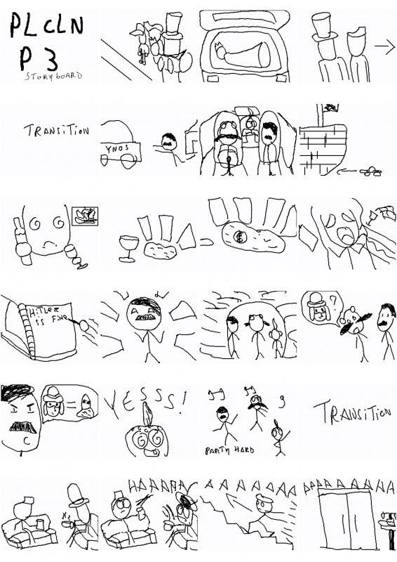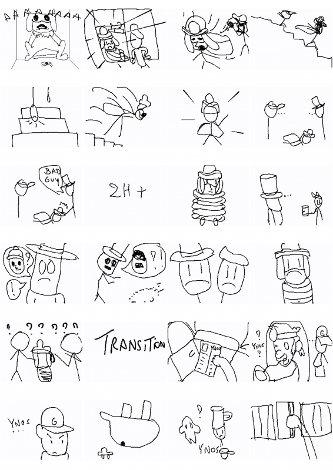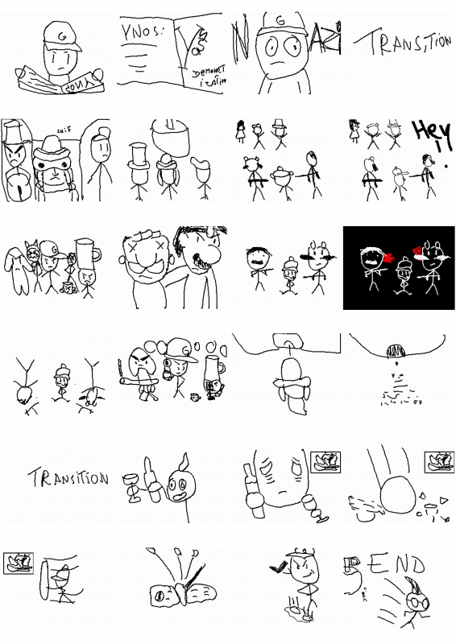
Le storyboard ne possédant QUE le minimum en élément, je pensais que ça serait une bonne base pour faire une YTP où je suis sûr d'aller quelque part !
Etape 2: La recherche
Les éléments du storyboard ont été téléchargés et des éléments pour booster ma liberté de construction de phrases pour les différents personnages aussi !
Pour la voix du Professeur Layton, certaine phrases proviennent de Crocodile de One Piece, Fox McCloud de StarFox, Iketani de Initial D et Roy Mustang de Full Metal Alchemist ! Tous sont doublés par Martial LeMinoux ( j'emplois aussi les PUBs qu'il a fait pour Audi et le recrutement d'agent pénitencier ) !
https://www.rsdoublage.com/comedien-615-Le-Minoux-Martial.html
Pour la voix de Descole, certaines phrases proviennent de Shadow le hérisson, Onizuka de GTO, Watanabe d'Excel Saga et Teba de The Legend Of Zelda:Breath Of The Wild !
Tous sont doublés par Benoit Dupac mais j'ai également utilisé Ivankov de One Piece doublé par Benjamin Pascal (les voix se ressemblent un peu quand Benjamin Pascal surjoue Ivankov ) !
https://www.rsdoublage.com/comedien-88-Du-Pac-Benoit.html
https://www.rsdoublage.com/comedien-187-Pascal-Benjamin.html
Pour les décors, j'ai cherché sur Google Maps des falaises tout près d'une plage d'Angleterre: https://goo.gl/maps/vHR5cxX3tPkpbXAj9
51°08'56.0"N 1°23'02.4"E
51.148879, 1.384009
Pour les sprites des personnages principaux, je suis allé faire un tour sur https://www.spriters-resource.com/ et j'ai aussi utilisé http://charas-project.net/charas2/index.php !
Pour les musiques, la majorité proviennent de l'OST de Jojo's Bizarre Adventure et de Professeur Layton !
Pour les modèles 3D, ils proviennent soit de https://sketchfab.com/feed ou de https://www.models-resource.com/ !
Etape 3: La fabrication d'élément
Le scénario utilisant des lieux et cherchant la cohérence dans les placements des personnages, je me devais de refaire des éléments en 3D et d'autres en 2D !
J'ai dû aussi faire parler mon personnage ( Glin ) et animer mes dessins et modèles 3D !
Mes logiciels furent 3DSmax,Maya,Photoshop,PaintDotNet,AdobePremiere,After Effect, https://panzoid.com/tools/videoeditor et https://www.ispeech.org/text.to.speech !
Vous pouvez retrouver la majorité des éléments créés dans la YTP mais sachez que ce n'est pas la totalité !
Vous pouvez aussi en retrouvez pas mal à ces liens:
Dessins et Animations 2D: https://www.deviantart.com/kidpaddleetcie/gallery/
Animation 2D en tricolor: https://www.sudomemo.net/user/95C3EE50E113B7C8@DSi
Modèles 3D: https://sketchfab.com/KidpaddleetcieGlin/models
Etape 4: Le montage
Sur Adobe Premiere, le montage allait tout seul car le plus dur était de créer les éléments en fonction de ce que je voulais leurs donner comme effets plus tard dans le montage en lui-même ! Je dépassais peu souvent les 8 canaux utilisés (audio+vidéo) mais il est vrai que j'ai abusé des imbrications donc on n'est pas loin d'un montage de film !
Beaucoup de zoom, de travelling, d'effet d'opacité, de rotation, d'effet de flou, de déplacement de sprite,... j'ai passé plus de temps à faire le montage qu'à faire et télécharger les ressources mais ce fût facile... tellement facile que je me suis rendu compte que le storyboard n'était pas à respecter !
Le montage fût long pour plusieurs raison:
1. Le storyboard allait TROP à l'essentiel
2. Le montage devait respirer de temps en temps
3. Certaines scènes n'étaient pas assez longue et d'autres n'avaient pas vraiment de sens
4. Certains gags se devaient d'être fait...c'était impossible autrement
5. Mon partenaire, Kass', avait du mal à saisir le scénario ou trouvait que certain gag tombait à plat
6. Des gags changeaient des scènes entières par rapport au storyboard !
On est donc avec un résultat plus long, plus marrant, plus lisible et donc plus performant que ce que le respect du storyboard aurait donné !
Conclusion
Cette YouTube Poop aura été pour moi un parcours du combattant et sans le confinement ça aurait été bien plus long que 4 mois pour qu'elle se fasse ! Je n'ai pas la prétention de dire qu'elle est parfaite mais elle m'aura permis d'obtenir plus de capacité en 3D, en montage et en animation !
Ce fût lourd à la longue, je dormais peu et je veillais tard le soir pour la peaufiner mais elle est là ! ELLE EST GÉNIALE !!!
KidpaddleetcieGlin
Les épisodes précédents
[ It's a english version of this french article: https://kidpaddleetcieglin.skyrock.com/3321166794-Comment-Telecharger-une-Flipnote-sur-sudomemo-net.html ]
![[How?]Download a Flipnote on sudomemo.net !](../5252/79895252/pics/3328330646_1_2_YALmekka.png)
STEP 1:
Come to page whre you want to download the Flipnote...like this page:
https://www.sudomemo.net/watch/13B7C8_11EA7188C6EC9_000#=_=
Tips:
A page where you can see the Flipnote on Sudomemo begin with "https://www.sudomemo.net/watch/" and continue with 4 user'characters !
If you have a "@DSi" link like this: "https://www.sudomemo.net/user/95C3EE50E113B7C8@DSi", 4 user'characters are to end before the "@" symbole !
____________________________________________________________________________________________________
STEP 2:
Do a right-click on a side of the player (there is a enable-right-click script on the player zone... Austin Burk doesn't want you download Flipnotes ) and go to "inspect element" !
STEP 3:
Go to the video tag who has the Flipnote'source...a .mp4 file !
![[How?]Download a Flipnote on sudomemo.net !](../5252/79895252/pics/3328330646_1_4_zhEdVE6e.png)
![[How?]Download a Flipnote on sudomemo.net !](../5252/79895252/pics/3328330646_1_6_ySXiHAdc.png)
STEP 1:
Come to page whre you want to download the Flipnote...like this page:
https://www.sudomemo.net/watch/13B7C8_11EA7188C6EC9_000#=_=
Tips:
A page where you can see the Flipnote on Sudomemo begin with "https://www.sudomemo.net/watch/" and continue with 4 user'characters !
If you have a "@DSi" link like this: "https://www.sudomemo.net/user/95C3EE50E113B7C8@DSi", 4 user'characters are to end before the "@" symbole !
____________________________________________________________________________________________________
STEP 2:
Do a right-click on a side of the player (there is a enable-right-click script on the player zone... Austin Burk doesn't want you download Flipnotes ) and go to "inspect element" !
STEP 3:
Go to the video tag who has the Flipnote'source...a .mp4 file !
OR
Just go to the "application" tab and click on the video'player to run the Flipnote !
Go down, click on the "Media" tab who spawned between "Scripts" and "Images" tabs !
In the "Media" tab, do a double-click on the file with the .mp4 extension !
____________________________________________________________________________________________________
STEP 4:
Do a right-click on the link/file and click on "open in a new tab" !
STEP 5:
Now, you are on the video'player from your internet'browser ! You can now download the video easily with just a right click on the video'player !
SAVE AS and... THE FLIPNOTE IS IN YOUR COMPUTER !!!!
Voila !
KidpaddleetcieGlin
For a another version of this tutorial, you can see this on DeviantArt:
![[Comment ?]Créer une YTP comme Glin !](../5252/79895252/pics/3328099140_1_3_jwB7yy0Q.png)
Bienvenue dans ce tutoriel où vous allez prendre connaissance de la manière procédurale que j'emploi pour faire une YTP... les YTPs scénarisées bien sur !
Étape 1: Genesis Genesource
On va devoir choisir une source principale. Elle se doit d'être riche en phrase dîtes distinctement par un personnage qui sera, bien évidemment, le personnage centrale de la YTP.
Étape 2: Besoin de rien,envie de toi !
Une source n'est pas suffisante pour créer des dialogues riches et des situations cocasses ! Renseignez-vous sur les doubleurs derrières vos personnages et aller extraire des dialogues, des mots, des mimiques vocaux que le doubleur a fait avec +/- la même voix pour d'autres personnage.
Par exemple, mon Jean Descole a la voix de Benoit DuPac qui fait également la voix de Shadow le Hérisson mais aussi Tooru Watanabe dans Excel Saga. Avec Shadow, j'ai put créer une scène où il se barre avec une Chaos Emerald (fin de "Professeur Layton combat le nazisme-partie 1") et avec Watanabe, je peux lui faire dire des phrases plus obscènes et grossières !
Plus vous aurez de contenu derrière le personnage au niveau vocal, plus il sera vivant et votre liberté de mise en scène sera plus grande !
N'oublier pas non plus de regarder ce que la communauté autour de votre personnage a fait afin d'obtenir des poses, des expressions et des mouvements improbables ou juste en accord avec la mise en scène que vous désirez faire.
Remplissez vos dossiers et quand ils seront bien juteux, vous pourrez vous lancer dans les étapes suivantes.
Étape 3: Un fil rouge pour que ça bouge !
Une YTP, aussi incohérente soit elle, doit avoir un minimum de cohérence pour ne pas gâcher un niveau de lecture supplémentaire... vous voulez faire des vues ? Vous voulez que les gens vous suivent ? Faîtes en sorte qu'une histoire "à suivre" se ressentent et se fasse !
Une YouTube Poop avec un scénario, c'est l'idéal pour ne pas se perdre dans le montage et la prise de ressource... et aussi pour pouvoir savoir quand est-ce que c'est fini et quand est-ce qu'on pourra mettre en ligne le résultat !
Si je vous demande de chercher la source et des éléments supplémentaires en lien avec elle, ce n'est pas pour rien ! L'inspiration vient par l'interaction et vous avez probablement déjà une idée derrière la tête après avoir passer 5h sur DeviantArt, Pinterest et d'autres sites répertoriant des fan-arts et des extractions ! VOUS ÊTES INSPIRÉ JE VOUS DIS !!!
Vous connaissez le début, un événement perturbateur et la fin... mouai... 3 cases de BD, c'est approximativement 30 secondes de YouTube Poop... il va falloir rajouter du gras à l'ossature de votre histoire !
Quand j'écris une histoire pour une YouTube Poop, je l'écris comme ceci:
===============
Luke fait un câlin à Layton qui lâche des insultes sur Glin,TRANSITION
Princesse Luigi mange avec Tintin,
Tintin reçoit un message sur son smartphone,
Layton lui demande de se ramener avec Princesse Luigi,
Princesse Luigi et Tintin remballe tout deux la valise et se rendent à Londres.
====================
De cette manière, je structure l'histoire et sais quels sont les plans que je dois créer... comme pour une bande-dessiné puisque c'est un art séquentiel !Il suffira pour vous d'imaginer la réaction de vos personnages, des gags typés "YouTube Poop" et des moments de blanc pour faire respirer le visionneur afin d'obtenir une YTP de plus d'une minute ( 1 page de texte recto-verso en écrivant grand ! ).
Étape 4: La musique adoucis les m½urs... sauf la dubstep !
Vous le savez probablement mais de la mise en scène sans musique de fond c'est triste comme un frigo vide pendant le Black Friday !
Armez-vous de Soundcloud,YouTube, Dailymotion, MuseScore et autres sites/logiciels vous permettant d'obtenir de la musique ! Vous avez des scènes de pure "clash", des scènes romantiques, des scènes de gros beaufs et des scènes très tristes donc il va falloir, ici aussi, fourrés vos dossiers jusqu'à ce que vous ayez au moins 5 musiques par émotions possibles !
Sachez qu'il vaut mieux terminé cette étape avec une large gamme de musique, quitte à ce que vous ne vous servez pas des 3/4, pour ne pas devoir recommencer des recherches lors de l'étape de montage parce que la/les musique(s) que vous avez prise(s) ne fonctionne(nt) pas avec la scène ! Vous n'êtes pas devin et c'est pour ça qu'il faut être prévoyant de ce genre de mésaventure !
Des bruitages sont aussi à trouver mais ils sont tellement "génériques" que vous n'aurez aucun mal de le faire à des étapes ultérieurs en voyant la nécessité d'un bruitage à la vue d'un mouvement ou d'une action.
Si vous êtes en panne sèche de musique de fond, sachez que les jeux-vidéos possèdent des OSTs en lien avec l'action du jeu donc, vous me voyez venir, afficher votre culture vidéo-ludique en utilisant les musiques de vos jeux favoris... ou demander de l'aide sur des forums/ à vos amis / à votre famille / à d'autres poopeurs / ...
Étape 5: S'il te plait, dessine-moi un mouton !
Vous n'avez pas tout ce qui faut pour que la mise en scène soit bonne... c'est bien beau d'avoir des scènes toutes faîtes provenant du film/dessin-animé/jeu-vidéo/série que vous utilisez comme source mais... ces scènes ne collent pas avec les émotions de vos personnages ainsi qu'à la cohérence des scènes !
Il va falloir "patché" ces scènes ! À L'EDIIIIIIT CITOYEN !!! SORTEEEEEZ VOTRE PHOTOSHOP !!! ÉDITONS !! ÉDITONS !!! QU'AUCUNE RATURE SE PRÉSENTE À NOTRE VISION !!!
C'est essentiellement le format "PNG" qui va être utilisé pour sa transparence !
En gros, vous avez deux méthodes:
1. Extraire les visages, les bras, les corps et créer des scènes vides,
2. Re-dessiner les visages, les bras, les corps et des scènes vides.
La première méthode requiert plus du temps sur Photoshop ou PaintDotNet ou TheGimp 2.0 ou encore Photopea pour gommer autour des éléments que du talent mais la deuxième étape est plus propre mais requiert un respect des designs et est plus recommandée pour pour les sources de type "cartoon", il est plus facile de dessiné un dessin que de dessiné une photographie !
N'oublier pas de mettre les visages dans des dossiers en fonction des émotions et faîtes en sorte que la bouche aille 3 postures (grande ouverte, fermée, souriante) pour le lip-sync !
Étape 6: Montage,montage... dans les séquences je nage !
La dernière étape de notre création de YouTube Poop comme Glin, on va pouvoir passer le plus clair de notre temps à raccorder les fils de l'histoire !
Étape 6.1: Sentence-mixing
On ne peut pas se permettre de synchronisation vocale sans avoir le vocal, faîtes donc les phrases de vos personnages et créer un genre de sketch audio ! Espacer tout de même bien les différentes répliques au-cas-où-on-ne-sait-jamais des modifications doivent se faire en fonction du visuel pour plus de cohérence.
Étape 6.2: Assemblement
On importe les dossiers de fan-arts, de scènes, de PNG,... et on assemble le tout en fonction de la piste audio que vous avez générée précédemment ! N'oubliez pas de bien garder un rythme lent pour les scènes négatives ou chaudes et un rythme rapide pour les scènes positives ou incohérentes ! ( Impliquer votre visionneur, il doit se sentir nourris et chouchouté...) !
Étape 6.3: Synchronisation
On avance bien mais il faut désormais bien faire correspondre les mouvements au son !
Étape 6.4 : On s'ambiance, aller c'est partit !
On ajoute les musiques ainsi que des bruitages et on joue avec la colorimétrie, des zooms, des travellings et des déformations pour rajouter de l'ambiance ! N'oublier pas des petits effets de lumières et des détails superficiels et le tour est joué !
VOILA, plus qu'à exporter en 1080p30fps et la YTP comme Glin est crée !
KidpaddleetcieGlin
P. S. : Si vous avez des amis ou de la famille qui se rapproche de votre publique cible, demandez un pré-visionnage pour pouvoir faire des ré-ajustements de dernière minute... vous n'êtes pas parfait et la perfection se retrouve dans les boysbands donc il vaut mieux travailler de manière "collectif" et assumer ensemble que de tout assumer seul et finir en PLS dans la cave sur le chauffage central !
Lorsqu'on débute dans WordPress, on est censé déjà connaître le PHP et ses installations pré-requises MAIS comme je suis un peu tête en l'air et que d'autres personnes peuvent être dans le même cas que moi, je vous propose d'installer Wamp (http://www.wampserver.com/) pour pouvoir travailler sur votre futur site WordPress en local et non sur un site qui ne fera que planter !
Après avoir installer Wamp, il faut installer votre site WordPress dans le dossier " www " de Wamp ( de préférence, dans un dossier "wordpress" pour rester organisé) et se rendre sur
" localhost/wordpress/nom du futur site web/ ".
Si vous êtes coincé à cette étape, allez voir ces tutos:
https://www.commentcamarche.net/faq/46802-comment-installer-wordpress-en-local-sur-son-pc
http://www.apprenti-webmaster.com/formations-wordpress/formation-wordpress-debutant/lecon-1-installer-wordpress-en-local/
https://wp-infinity.com/tutoriels-wordpress/installer-wordpress/local-usb-xampp-wamp-instantwp/
Nous sommes donc sur une page vous demandant d'installer WordPress MAIS il faut penser à créer une base de donné sur " http://localhost/phpmyadmin/ " ( votre identifiant et mot de passe a été établi lors de l'installation de Wamp) et vous allez générer une nouvelle table vide au format "UTF-8 unicode-ci" avec comme nom les initiales de votre site web avec "_WPI" pour bien comprendre que c'est la première version de votre site web.
(En gros, c'est le "i" signifie "1" dans les nombres grecs et comme on ne peut pas mettre de chiffre arabe dans le nom d'une base de donnée, on fait autant s'y prendre avec les lettres grecs pour signifier l'ordre d'apparition des tables !)
Vous êtes donc, arrivé ici, en possession d'une table qui fera office de base de donnée pour WordPress lorsque vous l'installerez sur la page "" localhost/wordpress/nom du futur site web/ " ! Suivez donc les étapes de cette dernière page !
Maintenant que vous avez votre WordPress d'installer, on ne va pas s'embêter d'avantage, rendez-vous sur le site https://www.elegantthemes.com/gallery/divi/ afin d'acheter pour 120¤ le thème Divi qui va vous simplifier grandement la vie.
Vous décompresserez le thème "Divi" dans le dossier "C:\wamp64\www\wordpress\NomDeVotreSite\wp-content\themes\" afin de pouvoir le sélectionner dans " http://localhost/wordpress/NomDeVotreSite/wp-admin/themes.php ".
Ainsi, avec le thème Divi, vous pourrez créer des pages qui seront faciles à faire sans devoir coder quoi que ce soit !
VOILA !!!
Sinon, pour encore plus vous faciliter la création, il existe quelque plugin simplifiant la création et l'organisation du site WordPress ( ils se retrouvent dans la page " http://localhost/wordpress/NomDeVotreSIte/wp-admin/plugins.php ":
-Folders: Permet de créer plusieurs dossiers pour ranger vos pages,médias et articles.Bien pratique quand on gère un site vitrine mettant en avant plusieurs type de produits.
-Duplicateur de post: Pour ne jamais recommencer de zéro un article ou une page.
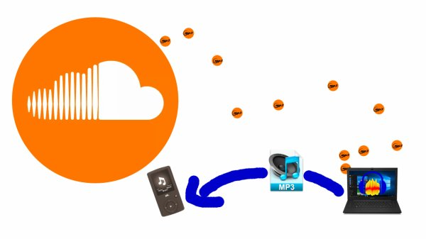
Il fût un temps où j'avais un plugin Google Chrome qui me permettait de télécharger à l'aide d'un bouton les musiques de Soundcloud ! C'était facile et rapide !
Aujourd'hui, on nous as supprimé ce plugin et c'est vraiment triste car voici l'astuce pour télécharger gratuitement des sons sur Soundcloud (oui, des sons !!!) :
1. Télécharger le plugin "Activer le clic droit de la souris" (accessible ici https://chrome.google.com/webstore/detail/enable-right-click/gpeddepmnbmkjfnhifmggnjdggibjjkf )
2. Rendez-vous sur Soundcloud et jouer une musique/chanson !
3. Cliquez sur l'icone de votre anti-anti-clic-droit et sélectionner "Ultimate Mode" !
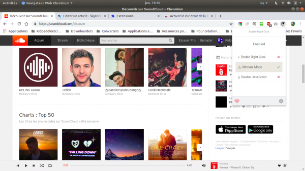
4. Inspecter l'élément n'importe où sur la page !
5. Allez dans la section "Applications"
6.Allez dans le dossier "XHR and Fetch" et sélectionner le fichier en .mp3 qui vous tente... ils ont tous le même nom et ce sont des parties de la musique que vous avez joué !
Voila, pour obtenir une musique EN ENTIER, vous allez devoir télécharger un par un les petits bouts et les fusionné entre eux dans un logiciel comme Audacity !
Moi, je vous le dis, je trouve ça trèèèèèès lonnnnng et je suis nostalgique de mon bouton "download" sur l'ensemble des sons du site !
Il fût un temps où j'avais un plugin Google Chrome qui me permettait de télécharger à l'aide d'un bouton les musiques de Soundcloud ! C'était facile et rapide !
Aujourd'hui, on nous as supprimé ce plugin et c'est vraiment triste car voici l'astuce pour télécharger gratuitement des sons sur Soundcloud (oui, des sons !!!) :
1. Télécharger le plugin "Activer le clic droit de la souris" (accessible ici https://chrome.google.com/webstore/detail/enable-right-click/gpeddepmnbmkjfnhifmggnjdggibjjkf )
2. Rendez-vous sur Soundcloud et jouer une musique/chanson !
3. Cliquez sur l'icone de votre anti-anti-clic-droit et sélectionner "Ultimate Mode" !
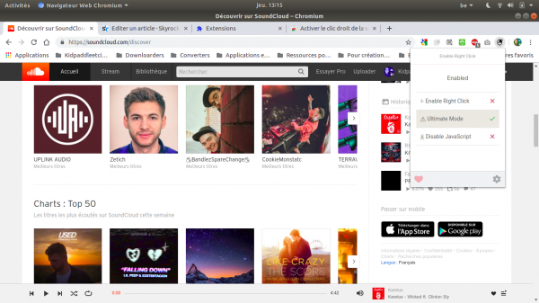
4. Inspecter l'élément n'importe où sur la page !
5. Allez dans la section "Applications"
6.Allez dans le dossier "XHR and Fetch" et sélectionner le fichier en .mp3 qui vous tente... ils ont tous le même nom et ce sont des parties de la musique que vous avez joué !
Voila, pour obtenir une musique EN ENTIER, vous allez devoir télécharger un par un les petits bouts et les fusionné entre eux dans un logiciel comme Audacity !
Moi, je vous le dis, je trouve ça trèèèèèès lonnnnng et je suis nostalgique de mon bouton "download" sur l'ensemble des sons du site !
KidpaddleetcieGlin
MISE À JOUR AVRIL 2020
Maintenant, on peut utiliser le plugin Google Chrome "MeddleMonkey" (https://chrome.google.com/webstore/detail/meddlemonkey/moihledlmchhofenpacbhphnbnpakgmo/) et suivre ce tutoriel:
En gros, il permet de créer un bouton qui va reprendre les données de stream et les compilés automatiquement pour enregistrer le résultat dans le dossier souhaité ! C'est plus rapide que la méthode que je vous proposais ici après la fin de Soundcloud Downloader et ça vous donne un bouton "download" sur l'ensemble des sites de streaming connus comme Soundcloud,YouTube,Dailymotion,...
Lorsqu'on veut faire des vidéos avec de la 3D pour des boites de production ou juste pour le plaisir, il arrive qu'on veuille mettre un peu de profondeur à ce logo en 2D que vous avez fait sur Adobe Illustrator PARCE QUE FAIRE UN LOGO SUR PAINT N'EST PAS PRATIQUE POUR LES UTILISATIONS SUR PLUSIEURS DIMENSIONS, IL Y A UNE PERTE DE QUALITÉ !
Sachez que si vous exportez votre logo en .ai mais avec la compression "Adobe Illustrator 2003", vous pouvez importer votre fichier dans 3DSmax !
Sur 3DSmax, vous aurez juste les lignes (donc, pas les couleurs) de votre logo mais pas de panique, un logo n'est pas censé avoir une dizaine de couleur non plus donc il faudra les rajouter à la main une fois que vous aurez vos surfaces !
Pour un premier temps, analyser un peu toutes vos lignes et attacher ensemble les lignes qui représente des formes complexes ( le cercle dans le "O" par exemple pour éviter de devoir jouer avec deux surface pour faire le "O" ) et ainsi réduire drastiquement le nombre d'objet à l'intérieur du projet !
Une fois les graphes attachés et donc les formes définies, il ne reste plus qu'à faire sur l'ensemble "Convert to editable poly" et jouer avec votre logo (rajouter les couleurs, faire les extensions, déformations) pour obtenir ce pourquoi vous avez suivit ce tutoriel !
Sachez que si vous exportez votre logo en .ai mais avec la compression "Adobe Illustrator 2003", vous pouvez importer votre fichier dans 3DSmax !
Sur 3DSmax, vous aurez juste les lignes (donc, pas les couleurs) de votre logo mais pas de panique, un logo n'est pas censé avoir une dizaine de couleur non plus donc il faudra les rajouter à la main une fois que vous aurez vos surfaces !
Pour un premier temps, analyser un peu toutes vos lignes et attacher ensemble les lignes qui représente des formes complexes ( le cercle dans le "O" par exemple pour éviter de devoir jouer avec deux surface pour faire le "O" ) et ainsi réduire drastiquement le nombre d'objet à l'intérieur du projet !
Une fois les graphes attachés et donc les formes définies, il ne reste plus qu'à faire sur l'ensemble "Convert to editable poly" et jouer avec votre logo (rajouter les couleurs, faire les extensions, déformations) pour obtenir ce pourquoi vous avez suivit ce tutoriel !
KidpaddleetcieGlin
Comme vous le savez, Discord met une limite de 8 mégabytes (8 MB ou 8Mo,8 Mégaoctets, chez nous) et c'est assez compliqué d'enregistrer une bonne vidéo étant sous cette limite !
Il existe pourtant une astuce que tout développeur de site web qui utilise des vidéos connait: L'utilisation du WebM !
Lorsque vous avez exporter votre vidéo, vous devez la convertir en WebM avec un logiciel comme Format Factory (disponible ici: https://formatfactory.fr.uptodown.com/windows/telecharger ) ou Konvertor ( https://www.logipole.com/konvertor-en.htm )! La conversion est souvent lennnnnnnnnnnnnnnteuuuuuhhhh mais c'est le prix à payer pour poster une vidéo sur Discord qui est plus longue que les 20 secondes qu'on peut atteindre en moyenne (d'après mon propre vécût) avec un fichier en .mp4 !
Vous pouvez aussi convertir en ligne:
Cloudconvert: https://cloudconvert.com/mp4-to-webm
Convertio: https://convertio.co/fr/mp4-webm/
video online convert : https://video.online-convert.com/fr/convertir-en-webm
video2edit: https://www.video2edit.com/fr/convertir-en-webm
FreeConvert: https://www.freeconvert.com/mp4-to-webm
Media.io : https://www.media.io/convert/mp4-to-webm.html
Voila, sachez que des logiciels comme Panzoid (disponible ici: https://panzoid.com/tools/videoeditor ) permettent l'exportation directe en .webm !
N'oubliez pas que rien n'est miraculeux donc n'espérer pas charger une vidéo en 1080p 60fps sur Discord... privilégier un bon vieux 480p25fps pour vos vidéos de 2 minutes !
Il existe pourtant une astuce que tout développeur de site web qui utilise des vidéos connait: L'utilisation du WebM !
Lorsque vous avez exporter votre vidéo, vous devez la convertir en WebM avec un logiciel comme Format Factory (disponible ici: https://formatfactory.fr.uptodown.com/windows/telecharger ) ou Konvertor ( https://www.logipole.com/konvertor-en.htm )! La conversion est souvent lennnnnnnnnnnnnnnteuuuuuhhhh mais c'est le prix à payer pour poster une vidéo sur Discord qui est plus longue que les 20 secondes qu'on peut atteindre en moyenne (d'après mon propre vécût) avec un fichier en .mp4 !
Vous pouvez aussi convertir en ligne:
Cloudconvert: https://cloudconvert.com/mp4-to-webm
Convertio: https://convertio.co/fr/mp4-webm/
video online convert : https://video.online-convert.com/fr/convertir-en-webm
video2edit: https://www.video2edit.com/fr/convertir-en-webm
FreeConvert: https://www.freeconvert.com/mp4-to-webm
Media.io : https://www.media.io/convert/mp4-to-webm.html
Voila, sachez que des logiciels comme Panzoid (disponible ici: https://panzoid.com/tools/videoeditor ) permettent l'exportation directe en .webm !
N'oubliez pas que rien n'est miraculeux donc n'espérer pas charger une vidéo en 1080p 60fps sur Discord... privilégier un bon vieux 480p25fps pour vos vidéos de 2 minutes !
KidpaddleetcieGlin
[ If you want consult the english version of this article, you can click on this link:
https://kidpaddleetcieglin.skyrock.com/3328330646-ENG-How-Download-a-Flipnote-on-sudomemo-net.html ]
![[Comment?]Télécharger une Flipnote sur sudomemo.net !](../5252/79895252/pics/3321166794_1_6_VXVyvjac.png)
ETAPE 1
Rendez-vous sur la page où on peut voir votre flipnote, comme celle-ci:
https://www.sudomemo.net/watch/13B7C8_11EA7188C6EC9_000
Petite explication de la composition du lien:
Ces pages commencent toutes par "https://www.sudomemo.net/watch/" et enchaînent par les 4 derniers caractères de l'identifiant à l'utilisateur !
Par exemple, ma page utilisateur est:
https://www.sudomemo.net/user/95C3EE50E113B7C8@DSi
Vous remarquer mon "13B7C8" dans les deux liens ?
https://www.sudomemo.net/watch/13B7C8_11EA7188C6EC9_000
https://www.sudomemo.net/user/95C3EE50E113B7C8@DSi
Le reste du lien reste assez aléatoire mais il y a également un "_11" qui revient souvent sur les pages avec le player !
------------------------------------------------------------------------------------------------------------------------------------------------------
ETAPE 2
Cliquer sur la partie gauche de la page (il y a un "anti-clic-droit" sur le player) et rendez-vous sur "inspecter l'élément" !
ETAPE 3
Rendez-vous à la balise video qui a comme source la fameuse vidéo en .mp4 !
Pour se faire,il faut aller ici:
![[Comment?]Télécharger une Flipnote sur sudomemo.net !](../5252/79895252/pics/3321166794_1_2_qHL217BT.png)
OU
Rendez-vous dans l'onglet "Application" et cliquer sur le lecteur pour lancer la vidéo !
Un onglet "Media" apparaîtra parmi "Fonts","Images","Scripts" et "Stylesheets"!
Cliquer sur cet onglet et vous pourrez double-cliquer sur le lien de la vidéo en .mp4 !
![[Comment?]Télécharger une Flipnote sur sudomemo.net !](../5252/79895252/pics/3321166794_1_4_TQSH9QdR.png)
ETAPE 4
Faites un clic-droit sur le lien et cliquer sur "open in a new tab" !
ETAPE 5
Une fois sur la nouvelle page avec le lecteur natif de votre navigateur web, vous pouvez appuyez sur les trois petits points pour cliquer sur "TÉLÉCHARGER" et... donnez un nom à votre Flipnote ainsi que lui trouver un dossier pour enfin l'enregistrer !
VOILA !
https://kidpaddleetcieglin.skyrock.com/3328330646-ENG-How-Download-a-Flipnote-on-sudomemo-net.html ]
ETAPE 1
Rendez-vous sur la page où on peut voir votre flipnote, comme celle-ci:
https://www.sudomemo.net/watch/13B7C8_11EA7188C6EC9_000
Petite explication de la composition du lien:
Ces pages commencent toutes par "https://www.sudomemo.net/watch/" et enchaînent par les 4 derniers caractères de l'identifiant à l'utilisateur !
Par exemple, ma page utilisateur est:
https://www.sudomemo.net/user/95C3EE50E113B7C8@DSi
Vous remarquer mon "13B7C8" dans les deux liens ?
https://www.sudomemo.net/watch/13B7C8_11EA7188C6EC9_000
https://www.sudomemo.net/user/95C3EE50E113B7C8@DSi
Le reste du lien reste assez aléatoire mais il y a également un "_11" qui revient souvent sur les pages avec le player !
------------------------------------------------------------------------------------------------------------------------------------------------------
ETAPE 2
Cliquer sur la partie gauche de la page (il y a un "anti-clic-droit" sur le player) et rendez-vous sur "inspecter l'élément" !
ETAPE 3
Rendez-vous à la balise video qui a comme source la fameuse vidéo en .mp4 !
Pour se faire,il faut aller ici:
OU
Rendez-vous dans l'onglet "Application" et cliquer sur le lecteur pour lancer la vidéo !
Un onglet "Media" apparaîtra parmi "Fonts","Images","Scripts" et "Stylesheets"!
Cliquer sur cet onglet et vous pourrez double-cliquer sur le lien de la vidéo en .mp4 !
ETAPE 4
Faites un clic-droit sur le lien et cliquer sur "open in a new tab" !
ETAPE 5
Une fois sur la nouvelle page avec le lecteur natif de votre navigateur web, vous pouvez appuyez sur les trois petits points pour cliquer sur "TÉLÉCHARGER" et... donnez un nom à votre Flipnote ainsi que lui trouver un dossier pour enfin l'enregistrer !
VOILA !
KidpaddleetcieGlin
------------------------------------------------------------------------------------------------------------------------------------------------------
Quand j'ai appris qu'on sait poster de la 3D sur Facebook, je me suis vite renseigné en faisant des recherches...comme tout être humain doté du web et de mains complètes ainsi qu'un support pouvant se connecter à internet avec une interface visuelle... c'est précis mais c'est pour accentuer la blague!
De mes recherches, j'ai appris 2 choses:
1. Le format est propre à Facebook donc l'utilisation d'un Uploader qui convertira votre fichier est nécessaire!
2.Il existe un logiciel en ligne pour créer aisément (sans réelle difficulté) des modèles 3D directement exportable sur Facebook! En voici le lien: https://easy3dpost.com/
Le format de fichier des modèles 3D de Facebook est le ".glb", la version binaire du format "glTF 2.0" qui est disponible en téléchargement alternatif du fichier d'origine sur Sketchfab!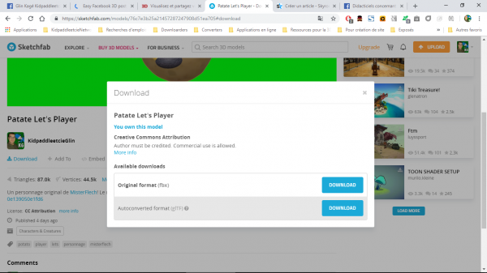
Comment obtenir la version binaire de ce format de fichier alternatif dont on nous vend les mérites de son rapport poids/qualité à cette adresse https://developers.facebook.com/docs/sharing/3d-posts/glb-tutorials/ ? Hé bien... il n'y a qu'à suivre cette démarche proposé dans le lien, justement!
Le soucis est qu'il est long si on ne démarre qu'à partir de son fichier .FBX! Donc il vaut mieux abrégé nos souffrances en publiant sur Sketchfab nos modèles 3D puis les télécharger directement dessus dans le bon format (glTF 2.0)!
Maintenant que nous avons abrégé 4 étapes en 2 sans passer par du coding et du téléchargement de logiciel sur Github ( https://github.com/facebookincubator/FBX2glTF ), on n'a plus qu'à faire la dernière étape qui est de convertir le glTF en GLB!
Pour se faire, l'étape demande juste qu'on fasse cliquer-glisser les fichiers que Sketchfab nous as offert gratuitement et gentiment sur la page! https://glb-packer.glitch.me/
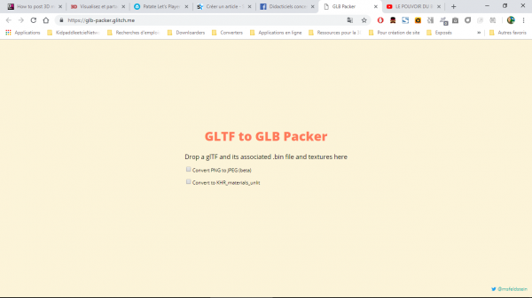
VOILA! 3 ÉTAPES POUR FAIRE UN MODÈLE 3D PUBLIABLE SUR FACEBOOK!!! VOUS ALLEZ POUVOIR SPAMMER VOS AMIS D'OBJET À REGARDER SUR PLEINS D'ANGLES DIFFÉRENT!!!!
Il y a une limite de 3 145 728 bytes (donc 3 MB) de mémoire allouées à un modèle 3D!
MISE À JOUR OCTOBRE 2021:
Il semblerait que Facebook aille retirer la fonctionnalité d'importation de petit modèle 3D !
La fonctionnalité était expérimentale et il est possible qu'elle fût retirer parce que peu de gens l'employait.
------------------------------------------------------------------------------------------------------------------------------------------------------
Quand j'ai appris qu'on sait poster de la 3D sur Facebook, je me suis vite renseigné en faisant des recherches...comme tout être humain doté du web et de mains complètes ainsi qu'un support pouvant se connecter à internet avec une interface visuelle... c'est précis mais c'est pour accentuer la blague!
De mes recherches, j'ai appris 2 choses:
1. Le format est propre à Facebook donc l'utilisation d'un Uploader qui convertira votre fichier est nécessaire!
2.Il existe un logiciel en ligne pour créer aisément (sans réelle difficulté) des modèles 3D directement exportable sur Facebook! En voici le lien: https://easy3dpost.com/
Le format de fichier des modèles 3D de Facebook est le ".glb", la version binaire du format "glTF 2.0" qui est disponible en téléchargement alternatif du fichier d'origine sur Sketchfab!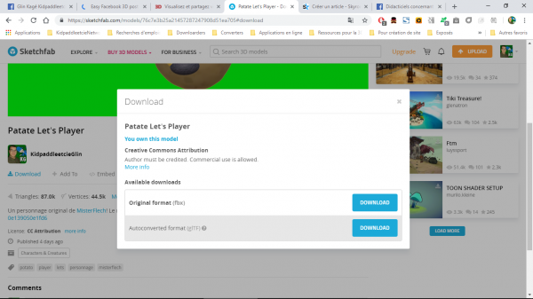
Comment obtenir la version binaire de ce format de fichier alternatif dont on nous vend les mérites de son rapport poids/qualité à cette adresse https://developers.facebook.com/docs/sharing/3d-posts/glb-tutorials/ ? Hé bien... il n'y a qu'à suivre cette démarche proposé dans le lien, justement!
Le soucis est qu'il est long si on ne démarre qu'à partir de son fichier .FBX! Donc il vaut mieux abrégé nos souffrances en publiant sur Sketchfab nos modèles 3D puis les télécharger directement dessus dans le bon format (glTF 2.0)!
Maintenant que nous avons abrégé 4 étapes en 2 sans passer par du coding et du téléchargement de logiciel sur Github ( https://github.com/facebookincubator/FBX2glTF ), on n'a plus qu'à faire la dernière étape qui est de convertir le glTF en GLB!
Pour se faire, l'étape demande juste qu'on fasse cliquer-glisser les fichiers que Sketchfab nous as offert gratuitement et gentiment sur la page! https://glb-packer.glitch.me/
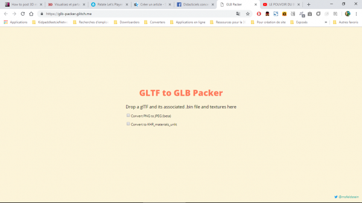
VOILA! 3 ÉTAPES POUR FAIRE UN MODÈLE 3D PUBLIABLE SUR FACEBOOK!!! VOUS ALLEZ POUVOIR SPAMMER VOS AMIS D'OBJET À REGARDER SUR PLEINS D'ANGLES DIFFÉRENT!!!!
KidpaddleetcieGlin
------------------------------------------------------------------------------------------------------------------------------------------------------
Mes sources:
Là où j'ai tiré mes premières informations:
https://www.digitalartsonline.co.uk/news/hacking-maker/artists-can-now-post-interactive-3d-models-straight-facebook/
https://www.digitalartsonline.co.uk/news/hacking-maker/artists-can-now-post-interactive-3d-models-straight-facebook/
Des précisions sur la nouveauté:
Le tutoriel de Facebook:
------------------------------------------------------------------------------------------------------------------------------------------------------
Précisions post-rédaction
Il y a une limite de 3 145 728 bytes (donc 3 MB) de mémoire allouées à un modèle 3D!
Vous pouvez faire vérifié vos modèles 3D avec cette page https://developers.facebook.com/tools/3d/validation !
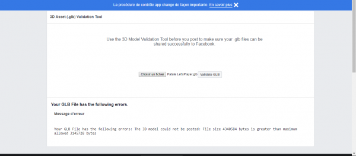
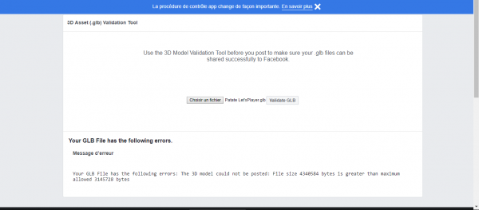
Quand on se balade dans les packs de clipart sur DeviantArt, on se rend compte que très peu des plus beaux et des plus utiles sont gratuits car ils nous mettent un watermark sur la preview et nous mettent un lien vers un autre site en description! ET C'EST TRÈS CHIANT DE PASSER DE L'ARGENT À DES GENS SURTOUT QUAND C'EST POUR DES RESSOURCES NÉCESSAIRES À LA CRÉATION DE NOS BANDES-DESSINÉES ET DE NOS VIDÉOS!
![[Comment?]Se faire un pack de clipart sur mesure gratuitement DE MANIÈRE LÉGALE!](../5252/79895252/pics/3316566986_1_12_OX1ZtqQO.jpg)
Je vous propose donc d'utiliser la fonctionnalité de Sketchfab qui se nomme "Screenshots" ( https://labs.sketchfab.com/experiments/screenshots/ ),
il permet, à partir d'un modèle 3D se trouvant sur Sketchfab, d'en faire une capture avec les dimensions que vous désirez et surtout d'en faire un .PNG avec transparence en enlevant le fond!
Voici donc les étapes nécessaires à l'obtention de votre image:
1.Trouver un modèle 3D sur sketchfab en tapant en anglais son nom dans la barre de recherche de Sketchfab!
![[Comment?]Se faire un pack de clipart sur mesure gratuitement DE MANIÈRE LÉGALE!](../5252/79895252/pics/3316566986_1_6_9HWhQL8b.png)
2.Appuyer sur "Load 3D SCENE" à la page de Screenshots,
![[Comment?]Se faire un pack de clipart sur mesure gratuitement DE MANIÈRE LÉGALE!](../5252/79895252/pics/3316566986_1_8_TvCTiIed.png)
3.Aller dans "From Url" dans la fenêtre qui vient d'apparaître,
![[Comment?]Se faire un pack de clipart sur mesure gratuitement DE MANIÈRE LÉGALE!](../5252/79895252/pics/3316566986_1_10_gxZ1iyrv.png)
4.Copier-Coller le lien de la page du modèle 3D que vous avez trouver à la première étape,
![[Comment?]Se faire un pack de clipart sur mesure gratuitement DE MANIÈRE LÉGALE!](../5252/79895252/pics/3316566986_1_4_BcUEqXGV.png)
5.Appuyer sur LOAD,
6. Renseigner dans "résolution" la largeur et la hauteur de votre capture,
7.Cocher "Transparent Background (will reload)",
8.Placer correctement votre modèle 3D dans le viewport en glissant avec le clic gauche de la souris pour le faire pivoter et en utilisant la roulette pour zoomer!
![[Comment?]Se faire un pack de clipart sur mesure gratuitement DE MANIÈRE LÉGALE!](../5252/79895252/pics/3316566986_1_2_RASQTorc.png)
9.Finalement, appuyer sur "Export Screenshot" et enregistrer dans un dossier votre capture!
Et voila, répéter la méthode et vous aurez un packet d'images avec la meilleur des qualités possibles pour vos productions!
Je vous propose donc d'utiliser la fonctionnalité de Sketchfab qui se nomme "Screenshots" ( https://labs.sketchfab.com/experiments/screenshots/ ),
il permet, à partir d'un modèle 3D se trouvant sur Sketchfab, d'en faire une capture avec les dimensions que vous désirez et surtout d'en faire un .PNG avec transparence en enlevant le fond!
Voici donc les étapes nécessaires à l'obtention de votre image:
1.Trouver un modèle 3D sur sketchfab en tapant en anglais son nom dans la barre de recherche de Sketchfab!
2.Appuyer sur "Load 3D SCENE" à la page de Screenshots,
3.Aller dans "From Url" dans la fenêtre qui vient d'apparaître,
4.Copier-Coller le lien de la page du modèle 3D que vous avez trouver à la première étape,
5.Appuyer sur LOAD,
6. Renseigner dans "résolution" la largeur et la hauteur de votre capture,
7.Cocher "Transparent Background (will reload)",
8.Placer correctement votre modèle 3D dans le viewport en glissant avec le clic gauche de la souris pour le faire pivoter et en utilisant la roulette pour zoomer!
9.Finalement, appuyer sur "Export Screenshot" et enregistrer dans un dossier votre capture!
Et voila, répéter la méthode et vous aurez un packet d'images avec la meilleur des qualités possibles pour vos productions!
KidpaddleetcieGlin
Lorsqu'on désire faire des montages de qualité et abréger des étapes tout en gardant une main mise sur ses images, on doit améliorer son logiciel avec des plugins, scripts et/ou brosses et formes!
Si j'ai choisis de vous présenter la manière pour améliorer votre PaintDotNet (téléchargeable ici: https://www.getpaint.net/download.html ), c'est parce que PHOTOSHOP EST PAYANT ET SES MEILLEURS PLUGIN AUSSI! Donc, PaintDotNet étant un des meilleurs logiciels de retouches et de création d'image avec Photoshop et TheGimp (et comme je n'emplois pas TheGimp), je vous montre la démarche pour PaintDotNet!
D'abord, il faut se rendre sur https://forums.getpaint.net/forum/7-plugins-publishing-only/ car c'est ici où vous pourrez choisir vos extensions!
Ensuite, appuyez sur le lien de téléchargement en pièce-jointe de l'article sur la présentation du plugin!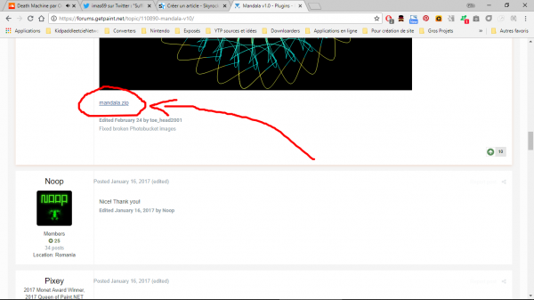
Peu après, une fenêtre s'ouvre...cliquer sur "Enregistrer"!
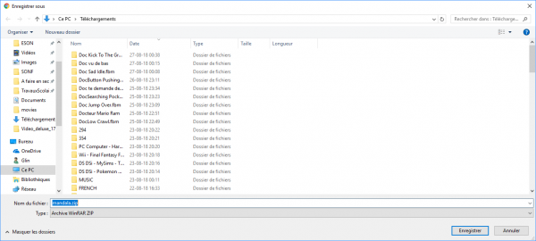
Maintenant que vous avez un .zip dans un dossier de votre ordinateur, ouvrez-le en cliquant dessus et admirer le contenu!
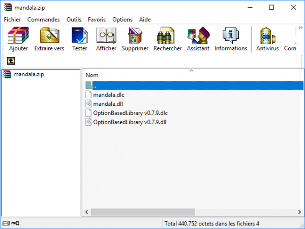
Vous voyez les fichiers ".dll" et ".dlc", et bien ils vont devoir être sélectionner et glisser dans le dossier "C:\Program Files\paint.net\Effects" de votre ordinateur!
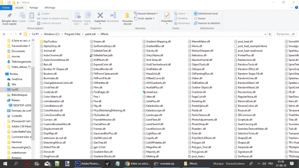
Et voila...c'est juste ça qu'il faut faire,n'oublier pas de confirmer que vous voulez bien les installer en cliquant sur "Continuer"!
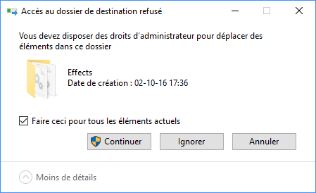
Allons voir comment se porte notre effet tout neuf:
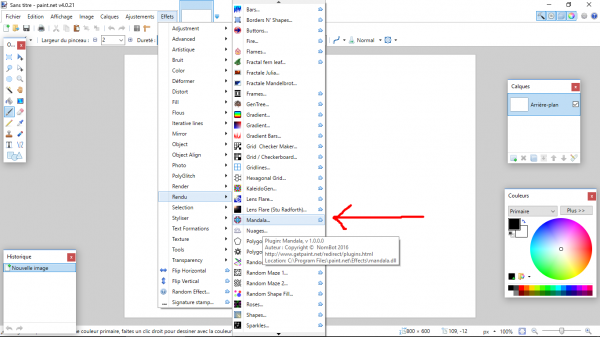
Là, on voit qu'il a bien été implanter dans le logiciel mais fonctionne-t'il vraiment?
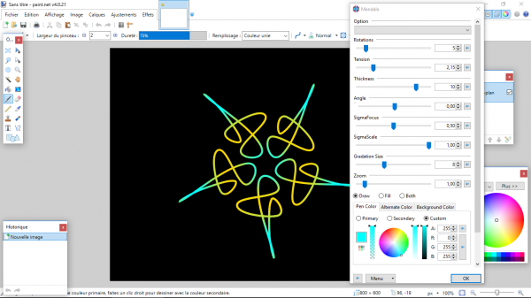
OUI! IL FONCTIONNE,IL EST VIVANNNNNNNNNNNNNNT!!!!
C'est tout, on n'a plus qu'à l'utiliser et vous pouvez répéter le tuto autant de fois que vous voulez pour offrir divers nouvelles fonctionnalités à votre PaintDotNet...vous pourrez même faire de la vidéo, de la 3D, des gifs animés, des exportations en .Obj, en .PSD ou encore en .MP4,... le logiciel peut tout faire contrairement à Photoshop qui pourrait bien le faire si il n'avait pas une communauté qui veut plus de pognon que de reconnaissance sociale en brillant sur les forums!
Voila!
Si j'ai choisis de vous présenter la manière pour améliorer votre PaintDotNet (téléchargeable ici: https://www.getpaint.net/download.html ), c'est parce que PHOTOSHOP EST PAYANT ET SES MEILLEURS PLUGIN AUSSI! Donc, PaintDotNet étant un des meilleurs logiciels de retouches et de création d'image avec Photoshop et TheGimp (et comme je n'emplois pas TheGimp), je vous montre la démarche pour PaintDotNet!
D'abord, il faut se rendre sur https://forums.getpaint.net/forum/7-plugins-publishing-only/ car c'est ici où vous pourrez choisir vos extensions!
Ensuite, appuyez sur le lien de téléchargement en pièce-jointe de l'article sur la présentation du plugin!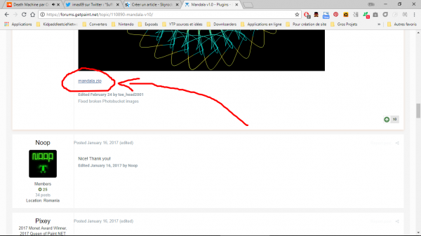
Peu après, une fenêtre s'ouvre...cliquer sur "Enregistrer"!
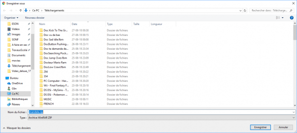
Maintenant que vous avez un .zip dans un dossier de votre ordinateur, ouvrez-le en cliquant dessus et admirer le contenu!
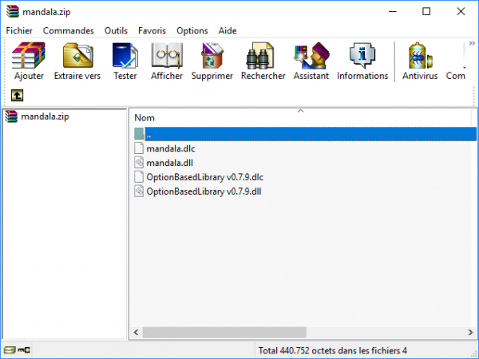
Vous voyez les fichiers ".dll" et ".dlc", et bien ils vont devoir être sélectionner et glisser dans le dossier "C:\Program Files\paint.net\Effects" de votre ordinateur!
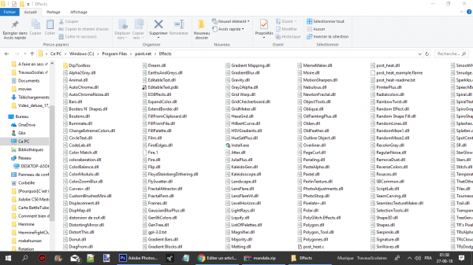
Et voila...c'est juste ça qu'il faut faire,n'oublier pas de confirmer que vous voulez bien les installer en cliquant sur "Continuer"!
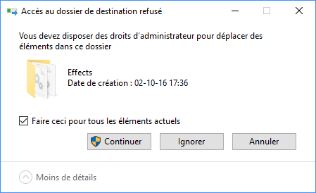
Allons voir comment se porte notre effet tout neuf:
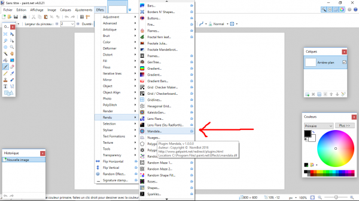
Là, on voit qu'il a bien été implanter dans le logiciel mais fonctionne-t'il vraiment?
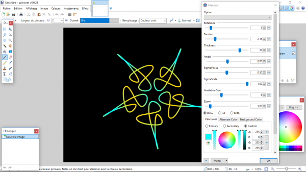
OUI! IL FONCTIONNE,IL EST VIVANNNNNNNNNNNNNNT!!!!
C'est tout, on n'a plus qu'à l'utiliser et vous pouvez répéter le tuto autant de fois que vous voulez pour offrir divers nouvelles fonctionnalités à votre PaintDotNet...vous pourrez même faire de la vidéo, de la 3D, des gifs animés, des exportations en .Obj, en .PSD ou encore en .MP4,... le logiciel peut tout faire contrairement à Photoshop qui pourrait bien le faire si il n'avait pas une communauté qui veut plus de pognon que de reconnaissance sociale en brillant sur les forums!
Voila!
KidpaddleetcieGlin
Aujourd'hui, on passe énormément de temps sur le web, beaucoup plus qu'il y a dix ans,et c'est due à la multiplication d'appareils connectés avec un écran (oui,ne prenons pas les friteuses connectées pour regarder le nouvel épisode du Joueur Du Grenier...) qui a progressé assez rapidement.
L'un des sites où on passe le plus de temps sur nos téléphones portables est YouTube. On y écoute notre musique, on regarde des émissions qui passe aussi à la TV, on regarde des critiques d'½uvres culturelles, on participe à des projets de web-série ou de film,... mais peu de gens sur l'ensemble de YouTube font des vidéos!
La demande étant grande, pourquoi ne pas se lancer et tenter de vous faire connaître ou juste faire une petite communauté pour créer une bande d'amis autour de sujet culturels,... les choix sont différents pour chacun!
Lorsque vous débuter sur YouTube, il y a plusieurs profil (comme des classes dans un RPG) possible:
Parodien/Poopeurs: Vous faîtes des parodies de contenus.
Podcasteur: Vous parlez devant votre caméra et vous vous mettez en scène.
Testeur: Vous parlez en off ou devant votre caméra et vous présenter du consommable.
Vloggeur/réactionner/let's player: Vous parlez devant votre caméra et vous montrez du contenu.
Musicien/chanteur/compositeur: Vous produisez un contenu audio auquel vous pouvez faire un clip.
De ces profils, viendront des classes secondaires:
Filmmaker: Vous faîtes des films,des courts-métrages.
Critique: Vous faîtes des critiques de contenus culturels.
Tuto-maker : Vous faîtes des tutoriels.
Pour produire du contenu, il ne faut pas nécessairement une caméra au début car (pour ma part) je trouve que le montage est plus important à apprendre au début donc le mieux est de télécharger des vidéos nulles,chiantes voir négligées et d'apprendre à utiliser son logiciel de montage avec afin de l'améliorer. N'oublier pas de demander à son auteur l'autorisation AVANT de publier.
Pour télécharger une vidéo sur YouTube, voici https://www.telechargerunevideo.com/fr/ .
Mais, suite à des problèmes avec la justice, on a désormais https://fr.savefrom.net/ .
On peut aussi utilisé https://notube.net/fr/tool-youtube .
Chaque logiciel de montage peut être classé par ordre de difficulté et en voici donc mon classement personnel (le plus haut est le plus facile):
Windows Movie Maker: https://www.commentcamarche.net/download/telecharger-34055158-windows-movie-maker
Movavi Video Editor 14: https://www.movavi.com/fr/videoeditor/
Shortcut: https://sourceforge.net/projects/shotcut.mirror/
Magix Video Deluxe Prenium: https://www.magix.com/fr/video/video-deluxe/
Panzoid (video editor): https://panzoid.com/tools/videoeditor
Panzoid (clipmaker): https://panzoid.com/tools/clipmaker (On l'utilise généralement pour des intros et des outros )
Sony Vegas : https://www.vegascreativesoftware.com/us/sem/vegas-pro-edit/
Adobe Premiere&After Effect :
https://www.adobe.com/be_fr/products/premiere.html
https://www.adobe.com/be_fr/products/aftereffects.html
Bien sur, lorsque vous faîtes des vidéos, il n'y a pas que des ressources de type "vidéo" que vous avez besoin, il faut aussi savoir où trouver vos images,vos sons et peut-être vos modèles 3D si vous êtes un gars qui débute sur YouTube avec déjà une expertise dans ce domaine:
Pour les images:
https://www.deviantart.com/resources/clipart/newest/
https://www.pinterest.fr/
https://www.spriters-resource.com/
https://www.textures-resource.com/
Pour les sons:
https://www.sounds-resource.com/
https://soundcloud.com/stream
https://www.ispeech.org/text.to.speech ( À utiliser pour générer des voix de synthèse ! )
http://www.cyberlol.com/humour/bruitages.php
https://lasonotheque.org/
Pour les modèles 3D:
https://www.models-resource.com/
https://sketchfab.com/feed
Par contre,c'est bien beau d'avoir des ressources pour ses vidéos mais n'oublier pas d'écrire ce que vous voulez dire,montrer et faire dans un document se trouvant dans un dossier arborant le titre de votre vidéo. L'organisation est le maître mot du YouTubeur ayant du succès!
Pour écrire vos textes, voici une liste de logiciels:
Bloc-Note (disponible en natif sur Windows)
Notepad++: https://notepad-plus-plus.org/fr/
Libreoffice Word: https://fr.libreoffice.org/download/libreoffice-stable/
Open Office d'Apache: https://www.openoffice.org/fr/
Microsoft Office Word: https://www.microsoft.com/fr-be/store/b/word_2016?&OCID=AID718530_SEM_oGYbOjml
Mais vous n'allez quand même pas éditer vos images,sons et modèles 3D dans votre logiciel de montage-vidéo? Il existe des logiciels dédiés à ça donc les voici:
Pour les images:
Paint (disponible en natif sur Windows)
LunaPic: https://www168.lunapic.com/editor/
PaintDotNet: https://www.getpaint.net/download.html
Gimp: https://www.gimp.org/fr/
MAGIX Photo & Graphic Designer: https://www.magix.com/fr-be/photo-graphisme/photo-graphic-designer/
Adobe Photoshop: https://www.adobe.com/be_fr/products/photoshop.html
Pour les sons:
Magix Music Maker: https://www.magix.com/fr-be/musique/music-maker/
Audacity: https://sourceforge.net/projects/audacity/
Adobe Audition: https://www.adobe.com/be_fr/products/audition.html
AudioSauna: http://www.audiosauna.com/studio/ (ATTENTION, utilise Adobe Flash Player)
Pour les modèles 3D:
Paint 3D (disponible en natif sur Windows 10)
SculptFab: https://labs.sketchfab.com/sculptfab/
Blender: https://www.blender.org/
3DSmax: https://www.autodesk.be/fr/products/3ds-max/overview
Maya: https://www.autodesk.be/fr/products/maya/overview
Mixamo: https://www.mixamo.com/#/ ( attention, c'est pour l'animation d'humanoïde !)
Tout ces logiciels peuvent être difficiles à employer quand on début mais sachez que des tutos sont disponibles sur YouTube et si vous ne trouvez pas votre bonheur, faîtes une demande à un gars qui a déjà fait un tuto sur le logiciel dont vous êtes perdu.
Sachez qu'il existe aussi https://fr.tuto.com/ pour obtenir des tutos professionnels bien classés.
Bien sur, débuter sur YouTube c'est aussi prendre conscience de certains danger liés au potentiel de visibilité possible pour une seule chaîne YouTube.Donc pour bien commencer sans vouloir se tailler les veines au bout de deux jours après la publication de votre première vidéo,respecter ces règles:
1.Ne pas montrez sa bouille (visage) quand on est/d' un enfant (de moins de 12 ans),
2.Ne pas divulguer son vrai prénom et son vrai nom (sinon,ça fuite et vous perdez votre liberté d'être qui vous voulez),
3.Ne pas plagier les autres pour le buzz (vous voulez la paix...vous l'aurez ;) ),
4.Ne pas clasher les autres pour le buzz (vous voulez la paix...eux aussi),
5.Mettre un petit logo en plein milieu ou créer une esthétique/un concept propre à votre chaîne (comme ça,pas de vol de vos production sans devoir faire des retouches dégradant la vidéo et prouvant que le voleur n'est pas l'auteur),
6.Évitez d'utiliser du contenu sous droits d'auteur au risque de perdre votre vidéo et,au bout de 3 pertes, votre chaîne YouTube.
7.Évitez de faire votre PUB en commentaire mais profiter des lives et des réseaux sociaux pour réagir en fonction du contexte. En gros: Faîtes-vous remarquer utilement!
N'oublier pas que votre première vidéo ne sera pas (et surtout "ne doit pas être") la meilleure vidéo de votre chaîne YouTube à cause du temps hyper-long que vous aurez pris pour la faire ou des achats que vous aurez également fait. Cette première vidéo doit juste permettre de montrer votre qualité étalonne et non votre meilleur qualité.
Montrer ce que vous savez déjà faire avec maximum 1 mois de travail et vous aurez bien commencé.
N'oubliez pas quelques astuces:
-Garder vos idées de vidéos dans un bloc-note,
-Garder les rushes de vos vidéos dans un dossier,
-Mettez vos textes sur un blog/un site afin de pouvoir y revenir au cas où c'est nécessaire,
-Mettez les musiques et extraits utilisés en lien dans la description de votre vidéo,
-Triez dans des playlists vos vidéos,
-Invitez les internautes à donner leurs avis sous vos vidéos,
-Créer un Twitter afin de garder un contacte avec votre communauté au-delà de votre chaîne,
-Créer un Dailymotion ( https://www.dailymotion.com/ ) ou un BitChute ( https://www.bitchute.com/ ) pour répertorier les vidéos qui ont été supprimées de YouTube!
Maintenant, il existe bien des conseils mais là, n'étant pas vraiment au stade de certains dans le YouTube Game, je m'en vais vous faire une compilation de leurs vidéos de type "conseils":
KidpaddleetcieGlin
Tout d'abord,il faut charger une image ou une vidéo avec un fond vert (ou autre fond monochrome se détachant par contraste de couleur avec le sujet à isolé) et se rendre dans l'effet de chrominance!
Pour se faire, on va aller dans Effets->Effets vidéo->Chrominance
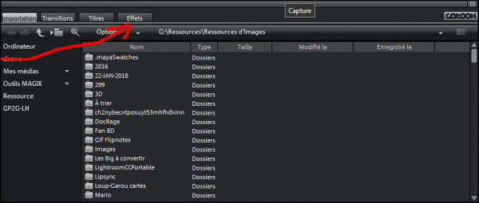
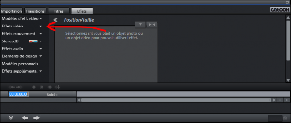
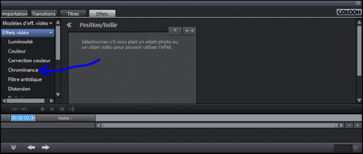
Il faudra appuyer sur le gros bouton vert... (oui,je vous prends pour des idiots...désolé) et réglé les variables seuil et plage de fondu.
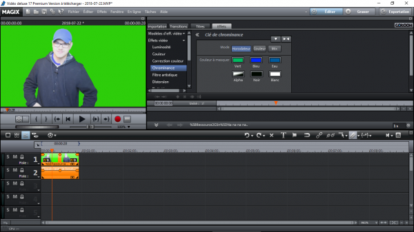
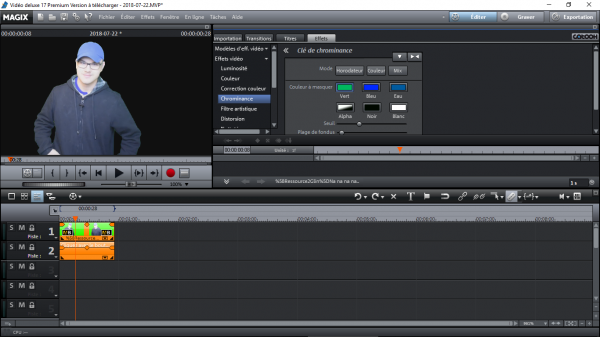
Le système est simple:
Le seuil permet de retirer des nuances de vert (en mettant le curseur tout à gauche,on enlève même le blanc)
La plage de fondu permet de créer un lissage du contour...et bizarrement de retirer toute imperfection dans le fond vert qui aurait eût des plis ou des crasses!
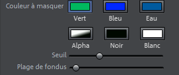
Voila,plus qu'à vous préciser que le fond vert devient un fond transparent auquel,si vous mettez le média sous l'effet de la chrominance sur une piste en-dessous une piste vide, vous pourrez mettre un autre fond et même faire des superbes effets de zoom compensé ou juste faire une composition afin d'améliorer une présentation!
KidpaddleetcieGlin
Au début, il vous faut une source de type "vidéo" que vous aurez obtenu au format .MP4!
(Télécharger une vidéo avec: https://www.telechargerunevideo.com/fr/
Convertir une vidéo en .MP4 avec: https://cloudconvert.com/anything-to-mp4 )
Ensuite, vous ouvrez Photoshop et, au lieu d'appuyez sur "Ouvrir", vous cliquer sur "Importation" et après "Images vidéo dans des calques..."
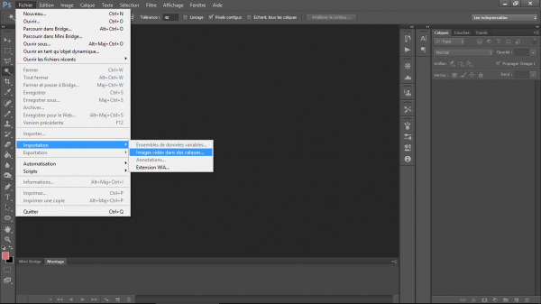
Sélectionner la vidéo précédemment obtenue et cocher "Créer animation d'image" ainsi que "Du début à la fin" pour obtenir votre vidéo en animation d'image.
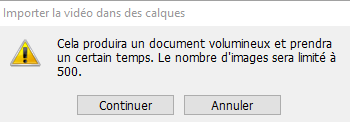
(ATTENTION,IL Y A UNE LIMITE DE 500 IMAGES DONC PAS PLUS DE 20 SECONDES POUR UNE VIDÉO EN 24 FPS)
Aller dans fenêtre-> Montage
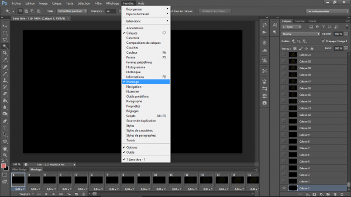
Tout en appuyant sur MAJ, chercher dans la partie "Montage" l'image qui se trouve avant la première image de l'animation souhaitée. Vous cliquerez dessus et vous obtiendrez une sélection de l'image 1 à l'image précédent la première image de votre animation.
Vous pouvez donc appuyez sur la poubelle pour y mettre toutes ces images inutiles.
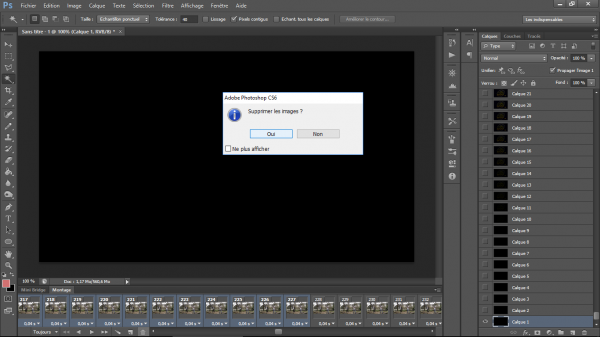
Maintenant qu'on a le début, on doit faire la fin en sélectionnant la dernière image de la table de montage et l'image se trouvant à droite de la dernière image de votre animation tout en maintenant MAJ enfoncé!
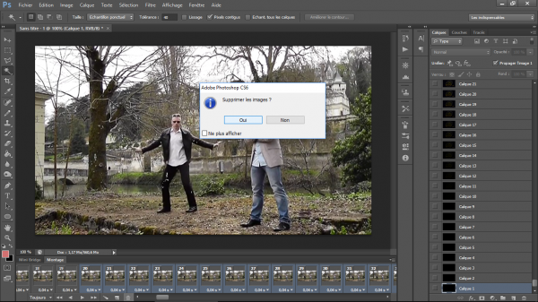
Vous aurez donc finit votre animation et il ne reste plus qu'à l'enregistrer au format .GIF en allant dans Fichier-Enregistrer pour le Web...
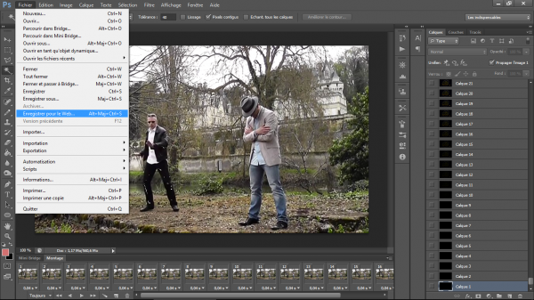
Nous sommes donc rendu sur une fenêtre où nous allons reproduire ce paramétrage:
Gif{
Perception
Diffusion
Pas de transparence
Pas entrelacé
256 couleurs
Tramage 100%
Convertir en sRVB
Sans métadonnée}
N'oubliez pas d'éviter une résolution trop grande...mais si votre vidéo est en 720p, ça passe crème!
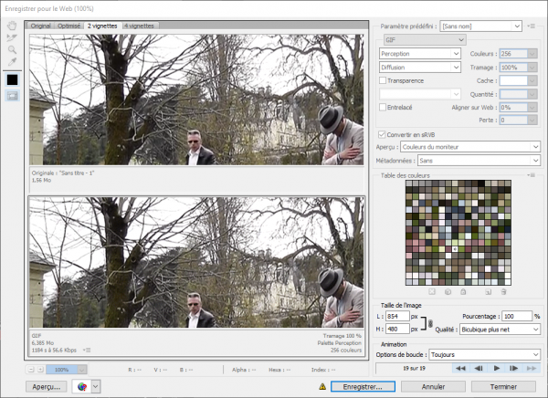
On peut donc appuyez sur "Enregistrer..." et terminer en nommant le gif animé avant d'appuyez sur ENTRÉE!
Voila, vous avez un rendu proche de la vidéo en gif animé!
KidpaddleetcieGlin
Pour d'autres manières:
Tutoriel Photoshop - Créer un Gif Animé avec Photoshop de Elliot Bth
https://www.youtube.com/watch?v=VymogTFgo0E
<!doctype html>
<!doctype html>
<head>
<title>Afficher 10 exposant quelque chose</title>
</head>
<body>
<h1>Afficher 10 exposant quelque chose</h1>
La valeur de l'exposant choisie est
<script>
var exposant=prompt("quel est votre nombre de zéro?");
document.write (exposant)
</script>
!
<br>
<script>
document.write (1)
for(var i=0;i<exposant;i++) {
document.write (0)
}
</script>
<br>
En language scientifique mais plus facile à lire,ça donne ça:
<script>
document.write("10^"+exposant);
</script>
</body>
</html>
À partir d'une image présenté comme celle-ci (chaque frame dans l'ordre d'apparition)
on peut en faire une animation! En voici le code:
<!Doctype html>
<head>
<style>
body {
background: couleur;
}
.animationPNG {
width: (largeur de l'image) px;
height: (hauteur de l'image) px;
margin: 2% auto;
background: url('fichier de l'image') left/right/center;
animation: play .(nombre de seconde)s steps(nombre de frame) infinite;
}
@keyframes play {
100% { background-position: -(largeur de l'image)px; }
}
</style>
</head>
<body>
<div class="animationPNG"></div>
</body>
</html>
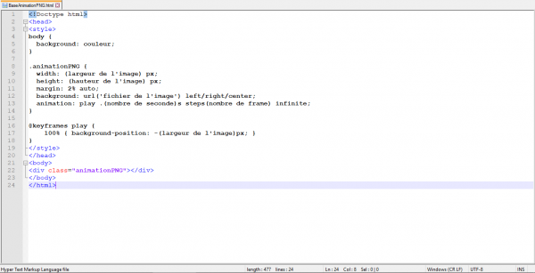
Afin d'avoir un exemple, il y a ce site: http://blog.teamtreehouse.com/css-sprite-sheet-animations-steps
on peut en faire une animation! En voici le code:
<!Doctype html>
<head>
<style>
body {
background: couleur;
}
.animationPNG {
width: (largeur de l'image) px;
height: (hauteur de l'image) px;
margin: 2% auto;
background: url('fichier de l'image') left/right/center;
animation: play .(nombre de seconde)s steps(nombre de frame) infinite;
}
@keyframes play {
100% { background-position: -(largeur de l'image)px; }
}
</style>
</head>
<body>
<div class="animationPNG"></div>
</body>
</html>
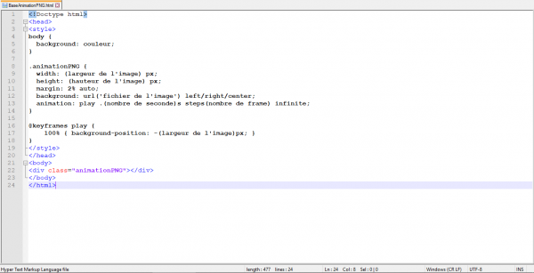
Afin d'avoir un exemple, il y a ce site: http://blog.teamtreehouse.com/css-sprite-sheet-animations-steps
![[Comment?]Créer et améliorer son image sur le Web!](../5252/79895252/pics/3311626992_1_5_AQoHdUnW.png)
Comme vous le savez, on a souvent besoin de miniature pour nos vidéos (pour éviter d'afficher une sale tronche ou une frame vraiment dégueulasse ou hors propos) ainsi qu'un joli petit effet de cadre pour améliorer le focus sur un détail de la photo ou encore mettre une image dans une image pour créer une présentation classique!
Tout ces montages,effets et traitement (car oui, on peut "corriger" une image sur le web) sont disponibles sur des sites un peu perdus à cause de la facilité et de l'augmentation qui en découle pour cracker Photoshop ou devenir génial sur PaintDotNet ou TheGimp... mais si vous avez un PC de merde ou une New3DS, c'est quand même plus pratique d'employer autre chose qu'un logiciel qui fera les rendus sur votre carte graphique!
Utiliser donc https://www141.lunapic.com/editor/ pour modifier vos photos comme sur PaintDotNet (avec certains effets supplémentaires et d'autres effets en moins...on ne peut pas tout avoir les gens) mais sachez que vous pourrez en faire une bonne miniature pour YouTube grâce à https://panzoid.com/tools/backgrounder qui est simple d'utilisation et il y a même des bases très intéressantes!
En ce qui est de la création pur, vous devrez passer par http://www.rinmarugames.com/playgame.php?game_link=mega-anime-avatar-creator pour faire votre personnage d'anime (ATTENTION, FLASH PLAYER DOIT ÊTRE INSTALLÉ SUR VOTRE PC) mais il y a aussi http://charas-project.net/charas2/index.php pour faire des personnages pour RPG Maker...mais vous pouvez en faire un pour un petit jeu fonctionnant avec javascript!
Il existe aussi le site Japonais https://picrew.me/ qui sert à faire des images de profil... c'est pas difficile à utiliser et c'est disponible sur Smartphone !
Pour transformer en "dessin pour un manga", il existe https://waifu.lofiu.com/ mais c'est optimisé pour les jeunes femmes !
Si vous désirez faire un .SVG d'une image que vous possédez ou juste créer une version un peu plus "Polygoné" de votre image, il y a http://alteredqualia.com/visualization/evolve/ !
Si vous désirez avoir plein d'image de votre Mii (3DS et WiiU) en 360°, vous avez https://desmu.github.io/Miicro-Ondes/ !
Si vous désirez faire des mèmes rapidement: https://imgflip.com/memegenerator/131350768/Grus-Plan
Pour effacer une marque qui se trouve dans un endroit précis de votre photo:
https://www.webinpaint.com/myimages
VOILA, probablement qu'il y a d'autre site mais il faut les trouver!
Partage